- ⇒ YouTube 02: Condições Aninhadas
- ✓ Nessa aula, vamos aprender como criar estruturas condicionais aninhadas, usando os comandos if.. elif.. else em programas Python.
Aula 12: Condições Aninhadas
Nesta fase continuaremos os estudos das condições, onde aprofundaremos os estudos pois nem tudo é verdadeiro e falso.
Nesta aula falaremos sobre as Condições Aninhadas.
Aninhar é inserir uma coisa dentro da outra, ou seja, vamos encaixandos as coisas.
Em todas as linguagem de programação, incluindo o Python, podemos inserir estruturas condicionais dentro de outras estruturas condicionais, portanto, chamamos isso de Condições Aninhadas.
Teoria
Na aula 10 estudamos como sair do ponto A e chegar ao ponto B, com apenas 2 (dois) caminhos, ou seja, apenas 2 opções.
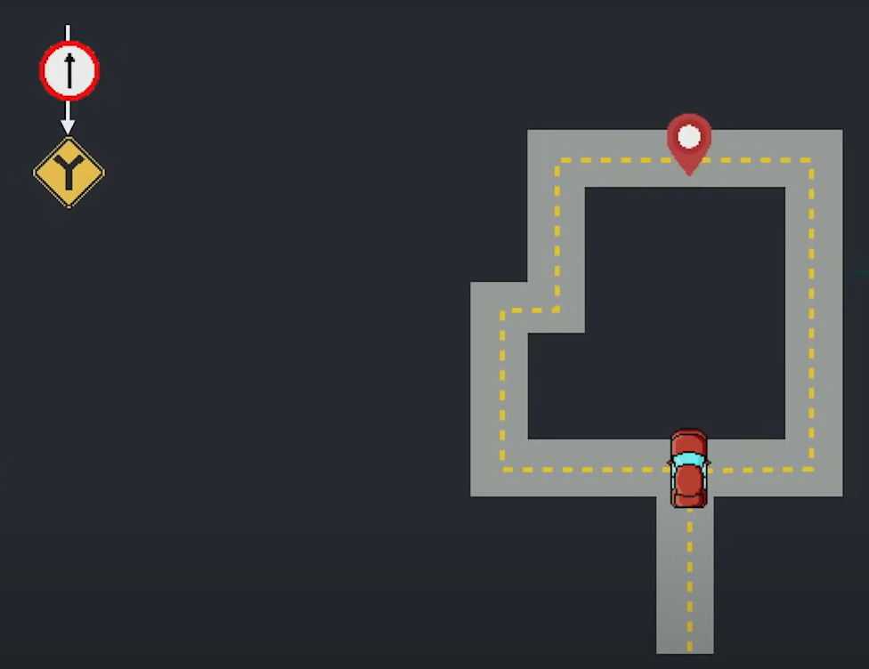
Neste exemplo, temos apenas 2 opções, ou ir para o caminho da direira ou para o caminho da esquerda.
Mas nem tudo são apenas 2 opções, pois podemos ter outros caminhos, com 3, 4 ou várias outras opções.
Apartir de agora, iremos inserir um caminho a mais, ou seja, teremos 3 (três) caminhos, portanto, não temos apenas vire para direita ou para esquerda, pois agora temos a opção de ir em frente.
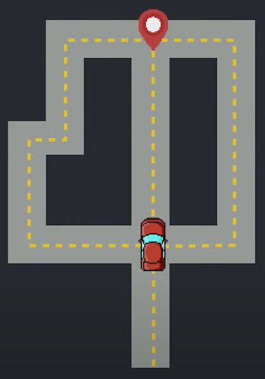
Caminho: Vire para esquerda
Se pegar o caminho para esquerda, teremos as instruções até chegar ao destino final (mesmo da Aula 10).
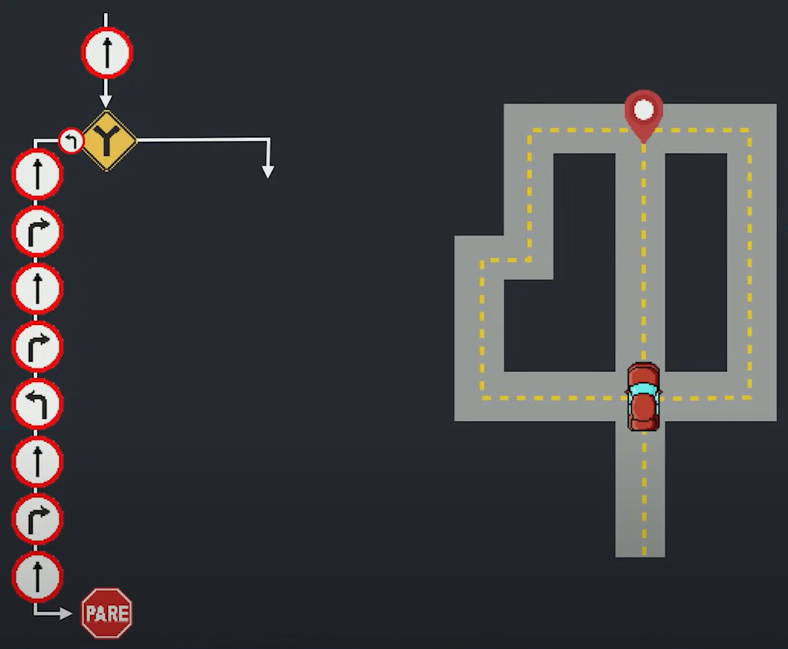
Caminho: Vire para direita ou seguir em frente
Na Aula 10 tínhamos somente 2 caminhos, mas agora, se não for para esquerda, temos mais 2 caminhos para seguir: direita ou em frente, portanto, dentro desta condição temos outras condições.
- ⇒ Caminho para direita
- O caminho para direita é exatamente igual ao da aula 10, desde a saída até a chegada ao destino final.
- 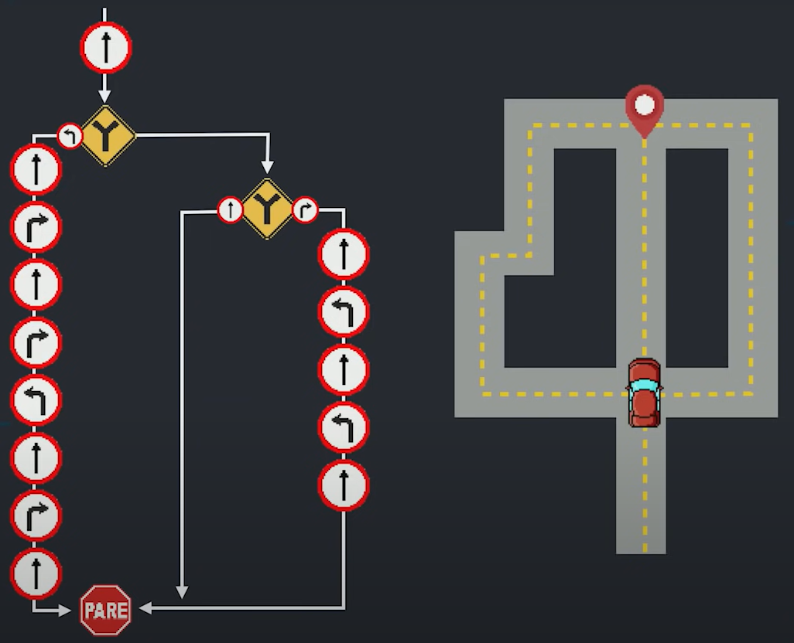
- ⇒ Caminho em frente
- O caminho seguir em frente é uma outra possibilidade, ou seja, é o 3º caminho, portanto, siga em frente e chegue ao destino final.
- 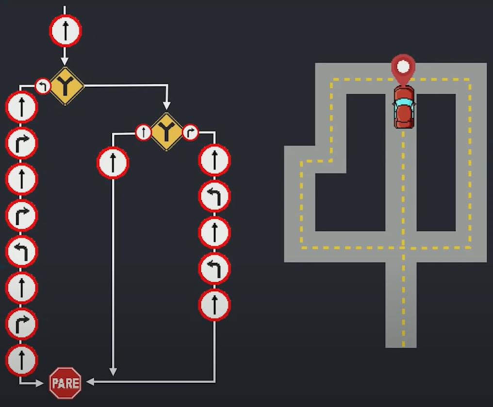
Devemos programar não só com a melhor hipótese, pois devemos avaliar outras possibilidades.
Com várias opções de caminhos, temos uma Condição Aninhada. Na estrutura acima (última figura), temos claramente uma estrutura condicional dentro de outra estrutura condicional, chamamos de aninhar.
Forma de Código
Como visto na aula 10, mostraremos esse caminho em forma de código.
O carro.siga() (primeiro comando) e carro.pare() (último comando) irá acontecer em todas as possibilidades.
O segundo comando será se carro.esquerda() e abaixo dele todos os outros comandos para chegar ao destino final, exatamente igual ao realizado na Aula 10.
Agora se não for para esquerda, posso ir para direita? NÃO, pois temos uma outra bifurcação, ou seja, teremos um outro se, portanto, devemos utilizar o comando senão se carro.direita() e em seguida os mesmos comandos da Aula 10.
Para finalizar, devemos utilizar o caminho em frente, portanto devemos utilizar o comando senão e em seguida o comando para seguir em frente até encontrar o destino final.
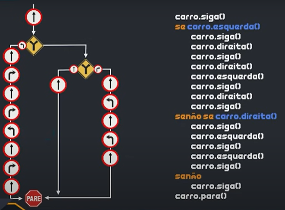
Observe a estrutura acima, onde podemos entender como inserir uma estrutura condicional dentro da outra.
Essa estrutura é possível representar em Python, na verdade é possível representar essa estrutura em várias linguagem de programação.
Os comandos em cinza, iremos manter, pois são exatamente iguais.
- Comandos em Python:
- ✓ se carro.esquerda() ⇒ if carro.esquerda():
- ✓ senão ⇒ else:
- ✓ senão se carro.direita() ⇒ else if carro.direita(), mas o Python simplificou essa expressão para elif = else if, portanto, a expressão será: elif carro.direita():
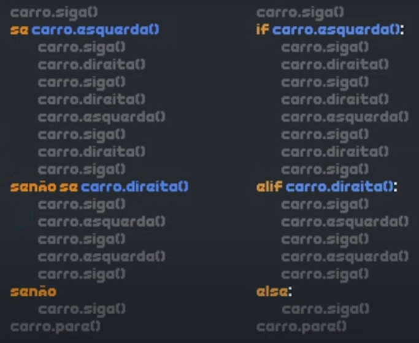
Nota: Não esqueça de acrescentar : no final da expressão, pois caso esqueça de acrescentar, tenha certeza que seu código não irá funcionar.
Estrutura Aninhada
A estrutura aninhada é muito simples, pois sempre teremos um if, mas nunca começaremos com elif e nem sempre teremos um else, portanto elif e else são opcionais. Até mesmo ao utilizar elif o else é opcional.
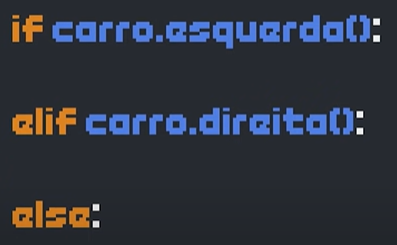
Estrutura Aninhada Padrão (Simplificada)
Quando executar o comando de if carro.esquerda():, teremos o bloco 1, quando executar elif carro.direita(): teremos o bloco 2 e quando executar else: teremos o bloco 3.
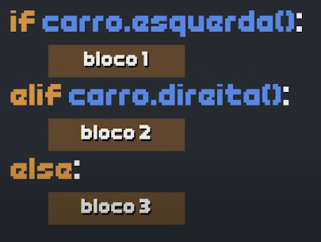
Essa é a estrutura aninhada padrão (simplificada) com apenas 3 possibilidades.
Estrutura Aninhada com 4 ou mais possibilidades
Quando tiver uma estrutura com 4 ou mais possibilidades, devemos acrecentar um elif para criar outro bloco.
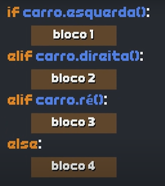
- ⇒ Importante
- ✓ Podemos utilizar dentro de um if quantos elif desejarmos e o else somente uma ou nenhuma vez.
- ✓ Podemos ter um if sem else e com vários elif.
- ✓ Podemos ter um if com vários elif e apenas um else.
- ✓ Mas nunca podemo utilizar elif sem if.
Prática
- ⇒ Condição Simples
- Utiliza somente if.
-
if nome == 'Marlei':
print('Você é muito inteligente!!!')
print('Tenha um bom dia, {}!!!'.format(nome))
- ⇒ Condição Composta
- Utiliza if e else.
-
if nome == 'Marlei':
print('Você é muito inteligente!!!!')
else:
print('Seu nome é tão normal.')
print('Tenha um bom dia, {}!!!'.format(nome))
- ⇒ Condição Aninhada com 3 opções
- Utiliza if, elif e else.
-
if nome == 'Marlei':
print('Você é muito inteligente!!!!')
elif nome == 'Maria' or nome == 'Pedro' or nome == 'José':
print('O nome {} é bem popular no Brasil!!!'.format(nome))
else:
print('Seu nome é tão normal.')
print('Tenha um bom dia, {}!!!'.format(nome))
- ⇒ Condição Aninhada com 4 ou mais opções
- Utiliza if, elif (2x) e else.
-
if nome == 'Marlei':
print('Você é muito inteligente!!!!')
elif nome == 'Maria' or nome == 'Pedro' or nome == 'José':
print('O nome {} é bem popular no Brasil!!!'.format(nome))
elif nome in 'Ana Juliana Letícia':
print('Belo nome vc tem {}!!!'.format(nome))
else:
print('Seu nome é tão normal.')
print('Tenha um bom dia, {}!!!'.format(nome))
Atentar que o else é opcional.
Desafios
- ⇒ Exercício 036: Aprovando Empréstimo
- → 26/Oct/2024 Saturday 11:48
- Escreva um programa para aprovar um empréstimo bancário para a compra de uma casa. O programa vai perguntar o valor da casa, o salário do comprador e em quantos anos pretende pagar.
- ✓ Calcule o valor da prestação mensal, sabendo que ela não pode exceder 30% do salário ou então o empréstimo será negado. Considerar que não há juros.
- ⇒ Exercício 037: Conversor de Bases Numéricas
- → 26/Oct/2024 Saturday 11:14
- Escreva um programa que leia um número inteiro qualquer e peça para o usuário escolher qual será a base de conversão:
- ✓ Para binário;
- ✓ Para octal;
- ✓ Para hexadecimal.
- Dica: Ver aula de Bases Numéricas!
- Aula
- O Python tem conversores automáticos em sua biblioteca, e.g. Bases Numéricas:
- bin para Base Binária: b = bin(n)
- oct para Base Octal: b = oct(n)
- hex para Base Hexadecimal: b = hex(n)
- ⇒ Exercício 038: Comparando Números
- → 26/Oct/2024 Saturday 06:41
- Escreva um programa que leia dois números inteiros e compare-os mostrando na tela uma mensagem:
- ✓ O primeiro valor é maior
- ✓ O segundo valor é maior
- ✓ Não existe valor maior, os dois são iguais
- ⇒ Exercício 039: Alistamento Militar
- → 26/Oct/2024 Saturday 12:55
- Faça um programa que leia o ano de nascimento de um jovem e informe, de acordo com sua idade:
- ✓ Se ele ainda vai se alistar ao serviço militar;
- ✓ Se é a hora de se alistar;
- ✓ Se já passou do tempo do alistamento.
- Seu programa também deverá mostrar o tempo que falta ou se passou do prazo.
- ⇒ Exercício Extra
- Inclua no programa, se for mulher não necessita realizar o alistamento militar.
- ⇒ Exercício 040: Clássico da Média do Aluno
- → 26/Oct/2024 Saturday 09:48
- Crie um programa que leia duas notas de um aluno e calcule sua média, mostrando uma mensagem no final, de acordo com a média atingida:
- ✓ Média abaixo de 5,0: REPROVADO
- ✓ Média entre de 5,0 e 6,9: RECUPERAÇÃO
- ✓ Média 7,0 ou superior: APROVADO
- ⇒ Exercício 041: Classificando Atletas
- → 26/Oct/2024 Saturday 06:12
- A Confederação Nacional de Natação precisa de um programa que leia o ano de nascimento de um atleta e mostre sua categoria de acordo com a idade.
- ✓ Até 9 anos: MIRIM;
- ✓ Até 14 anos: INFANTIL;
- ✓ Até 19 anos: JUNIOR;
- ✓ Até 20 anos: SÊNIOR;
- ✓ Acima: MASTER.
- ⇒ Exercício 042: Analisando Triângulo v2.0
- → 26/Oct/2024 Saturday 13:51
- Refaça o Exercício 035 dos triângulos, acrescentando o recurso de mostrar que tipo de triângulo será formado.
- ✓ Equilátero: todos os lados iguais;
- ✓ Isósceles: dois lados iguais;
- ✓ Escaleno: todos os lados diferentes.
- → Comandos:
- end='' no final de um print, junta com a linha inferior.
- 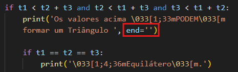
- 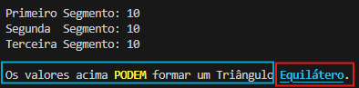
- ⇒ Exercício 043: Índice de Massa Corporal
- → 26/Oct/2024 Saturday 13:31
- Desenvolva uma lógica que leia o peso e altura de uma pessoa, calcule seu IMC e mostre seu status, de acordo com a tabela abaixo.
- ✓ Abaixo de 18,5: Abaixo do Peso;
- ✓ Entre 18,5 e 25: Peso ideal;
- ✓ 25 até 30: Sobrepeso;
- ✓ 30 até 40: Obesidade;
- ✓ Acima de 40: Obesidade mórbida (grave)
- ⇒ Exercício 044: Gerenciador de Pagamentos
- → 26/Oct/2024 Saturday 15:23
- Elabore um programa que calcule o valor a ser pago por um produto, considerando o seu preço normal e condição de pagamento.
- ✓ À vista cash/pix: 10% de desconto;
- ✓ À vista cartão: 5% de desconto;
- ✓ Em até 2x no cartão: Preço normal;
- ✓ 3x ou mais no cartão: 20% de juros.
- → Comandos:
- Antigo: print('\n{:=^50}'.format(' Exercício 044 '))
- Versão 2020: print(f'{" Exercício 044 ":=^50}')
- ===== Exercício 044 =====
- ⇒ Exercício 045: GAME: Pedra Papel e Tesoura
- → 26/Oct/2024 Saturday 16:47
- Crie um programa que faça o computador jogar Jokenpô com você.
- ✓ Pedra: Ganha da tesoura e perde do papel;
- ✓ Papel: Ganha da pedra e perde da tesoura;
- ✓ Tesoura: Ganha do papel e perde da pedra;
- → Comandos: Bibliotecas utilizadas
- import random ou from random import choice
- import time ou from time import sleep
- REVER AULA DO GG. modo diferente!
The End!